Your goal determines what your ecosystem model looks like. Let’s say your goal is to switch careers from engineering to marketing. Your engineering ecosystem will have a different set of influencers than your marketing ecosystem. If you are a retail executive and your goal is to become an outside board member in another industry, you will need to develop an external ecosystem that identifies business influencers in this new industry.
Those who need to partner or find new opportunities within their companies should focus on an internal ecosystem model, which models the influencers inside their company. Conversely, job hunters, entrepreneurs and independent consultants need to develop an external ecosystem model.
Look at the ecosystem model in Figure 5.2.
Figure 5.2
Ecosystem Wedge Model
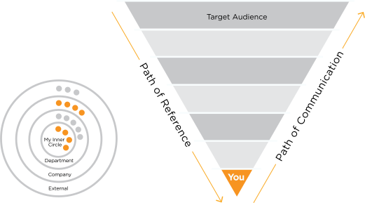 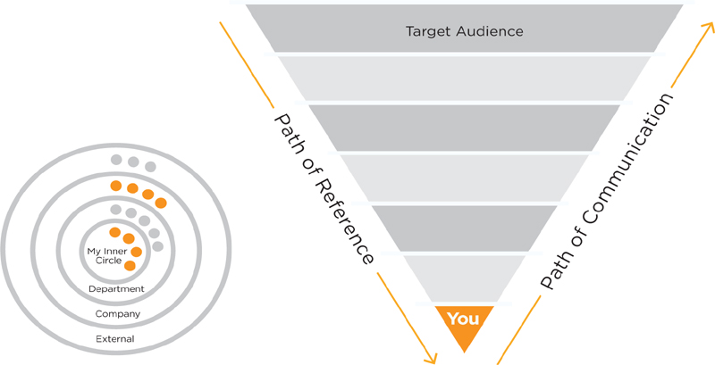
To access PDF version, go to www.brandingpays.com/resources
The Ecosystem Wedge Model is a “pie slice” view of the concentric circles that make up the ecosystem. How you communicate—your path of communication—should move out from those influencers closest to you to the wider public. People close to you need to know first! In between you and your target audience are influencers from various groups. How people check your references—path of reference—is generally by moving through the ecosystem from your target audience (the outermost sphere) to you. However, your target audience may choose different reference points at random. Reference checking does not necessarily follow a serial path through the ecosystem.
To make the ecosystem model easier to fill out, we have taken a wedge out of our concentric spheres of influence. You need to be in the apex of the pie slice, or wedge, and your target audience for branding is in the outermost sphere. For each sphere, identify a group of influencers. For a consultant’s external ecosystem model, the next spheres could be partners, key clients, complementary service firms, professional organizations and media, ending with potential clients in the outermost sphere (see Figure 5.3). Next, identify individual influencers in those groups. Your influencers may be people who are quoted or featured in the media, are retweeted frequently, speak before groups, lead professional organizations, shape opinions through word-of-mouth references or have other influence over your career. You’ll brainstorm your list and prioritize later. Voilà! You have your ecosystem model.
Figure 5.3
Ecosystem Wedge Model for Consultant
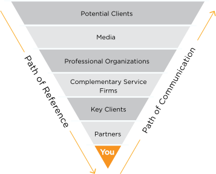 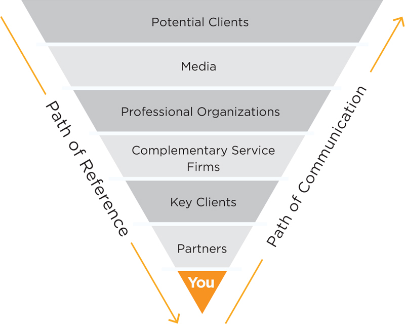
If you decided to get married, for instance, you would probably tell your family and friends first because if your mom learned about your engagement from strangers, you might lose your biggest supporter. The same is true of your personal brand. If you are launching a new personal brand, you need to get feedback, buy-in and endorsements from those closest to you in your ecosystem before going out to a wider audience. Those seeking references on you will check with key individuals or groups in your ecosystem. If those closest to you cannot corroborate your value messages or ideas, your credibility will suffer. If the ecosystem backs you up, then establishing your brand accelerates.
Let us examine the external ecosystem model of City Council candidate Hillary Freeman. In chapter 4, we learned how Hillary branded from the inside out—from her core values to the brand promise that she delivered to voters. The ecosystem is also about branding from the inside out. In the ecosystem model, we start with insiders and work outward to our potential audience or customer.
Figure 5.4
Hillary Freeman Ecosystem Model
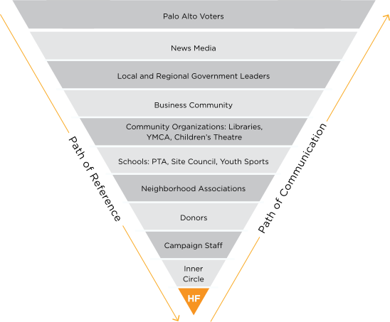 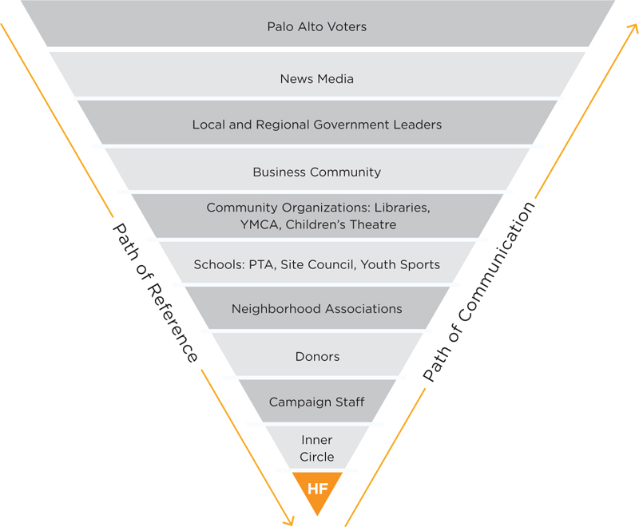
Hillary’s goal was to win a seat on the City Council. Her target audience was Palo Alto voters. If Hillary were a company, the target audience would be potential customers. If Hillary wanted to get a job, her target audience would be recruiters and hiring managers. The target audience should be in the outermost sphere of the ecosystem model. The person who is branding is shown in the apex of the wedge.
Hillary’s inner circle was her “kitchen cabinet”—a small group of her closest advisors. Before any public announcements or outreach, Hillary and her advisors ensured that her campaign staff understood her brand positioning. Empowered with the key messages and brand strategy, the campaign was able to represent her with consistent branding and communications. Hillary also gathered endorsements from key donors and supporters before taking her message out. She had a ready reference structure before going to the neighborhood groups, the school community, community organizations, the business community, government leaders and the news media. Hillary worked the ecosystem in a systematic way to win over the constituencies who would advocate for her and influence the electorate to vote for her. As we revealed in chapter 2, Hillary won with the highest margin of votes of any candidate and won her place on the City Council. She couldn’t have done this without the support of the ecosystem.
In chapter 3, we discussed how you need to have value messages that resonate with different audiences. The ecosystem model helps you to understand which groups and individuals need tailored messages. For instance, Hillary communicated to library supporters her role in advocating for a bond measure to renovate the city’s aging libraries. To the schools community, she emphasized better cooperation between the city and the school district on land use and adding sports fields for youth.
External Ecosystem Model: Professional Services
We will go back to our example of reference checking to select a back surgeon. In the surgeon’s ecosystem model (Figure 5.5), you are the “potential patient” and you may look to any of the references between you and the back surgeon to determine if she is the right surgeon for you. You want to choose a surgeon whose reputation is upheld by multiple trusted sources. Let’s say the surgeon you are considering has gone to excellent medical schools and is board certified, but has some negative reviews for “bedside manner” on consumer rating sites. However, your trusted family physician and your next-door neighbor say this surgeon is the best. You rate the trustworthiness of your family doctor and neighbor over consumers whom you have never met, and you choose the recommended surgeon.
Figure 5.5
Ecosystem Model for Surgeon
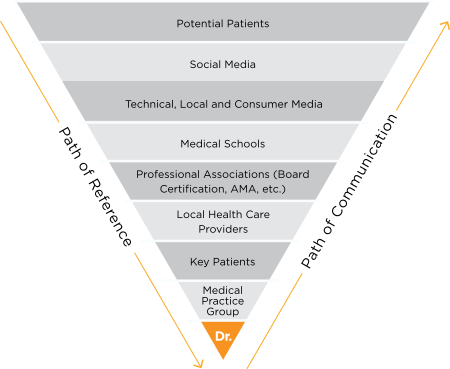 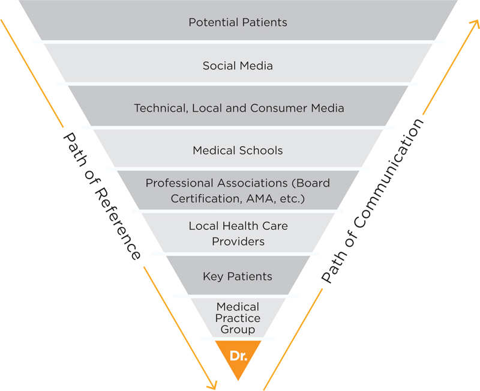
We’ve seen how a patient can use the ecosystem to find a surgeon. But how might our back surgeon use her ecosystem model to launch a new service? She has developed a new, minimally invasive technique for back surgery that lowers surgery risks and patient recovery time. We’ll call it the Pil Technique, named after her. She wants to let consumers know about it. Should her first move be to advertise it? The answer is no.
Why not? Remember, back surgery is perceived as a high-risk procedure. Awareness alone will not move patients to try something risky without ecosystem assurance. Bypassing the influencers by advertising directly to consumers will not succeed. Once the Pil Technique is advertised, the reference checking begins. If the key influencers don’t know about the technique or raise doubts about the procedure, the brand of the Pil Technique and its creator will suffer.
The best course of action is to follow the ecosystem path of communication. You brief those closest to you first, and expand your market education out from this base of support. Only after lining up credible references from key ecosystem groups should Dr. Pil advertise her technique. With the ecosystem creating buzz and advocating for her, it is likely that Dr. Pil will not have to advertise at all.
Imagine having influencers advocate for you. When a trusted person recommends that a company hire you, you will have a distinct advantage over someone who lacks a similar endorsement. Entrepreneurial companies that are introduced to venture capitalists by VC influencers, such as another successful entrepreneur, get immediate consideration versus entrepreneurs who lack an introduction.
You are not alone in branding yourself.
See the Hillary Freeman success example if you doubt the power of the ecosystem.
Internal Ecosystem Model
Paul is a principal engineer at a global manufacturing company. He was tasked with driving key initiatives that integrate engineering systems and quality systems.
Paul decided he needed to brand his key initiatives team and partner with key groups to be successful. He developed an internal ecosystem model (Figure 5.6) and placed Executive Leadership, his ultimate audience for branding, in the outermost sphere.
Figure 5.6
Paul’s Ecosystem Model for Initiatives
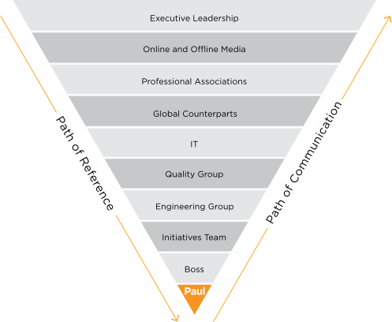 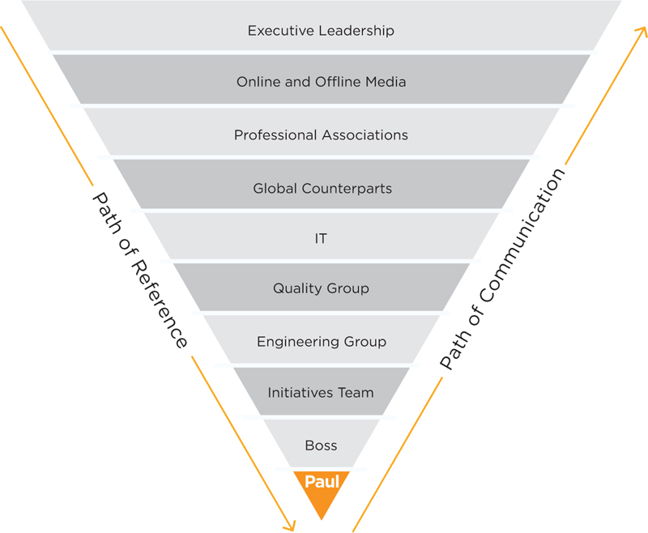
His inner circle included his boss and the early members of the key initiatives team, which he planned to augment with teams for each of the initiatives. Being part of U.S. operations, he included three U.S. groups next: engineering, quality and IT. Next he added the global counterparts to the U.S. groups. Finally, he added some external groups to his ecosystem model—professional associations and online and offline media, since both can influence brands internally.
He held an offsite meeting with his executive sponsors and with key stakeholders. The purpose was to kick off the engineering and quality initiatives and to educate the group on the objectives. His value messages for each audience resonated. He built strong leadership teams for each initiative. The initiatives were successful and he educated internally (U.S. and global operations) and externally (professional associations and technical media) on these best practices. His boss and top executives recognized him for his leadership success and for enhancing the company brand.
In Paul’s case, the ecosystem model was a way to get things done (recruit and build the initiative teams) and a way to educate on the team brand and his individual brand.
Job Search Ecosystem
As always, your goal will determine what your ecosystem model should look like. This generic model is a good start for any job search, but the actual organizations and individuals you identify in the different spheres will vary depending on what kind of job you seek, in what industries and in what geographies. Leverage social media presence to help recruiters and hiring managers find you. However, one of the best ways to get a job is through friends who tell you of an opening in their company and recommend you for the position.
Figure 5.7
Ecosystem System Model for Job Search
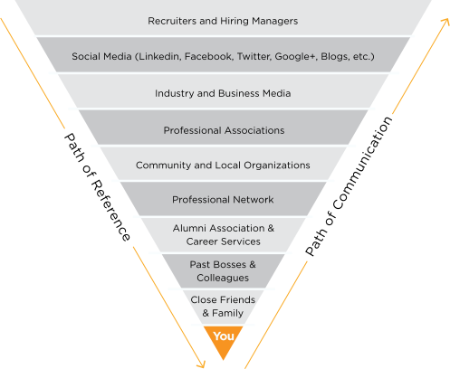 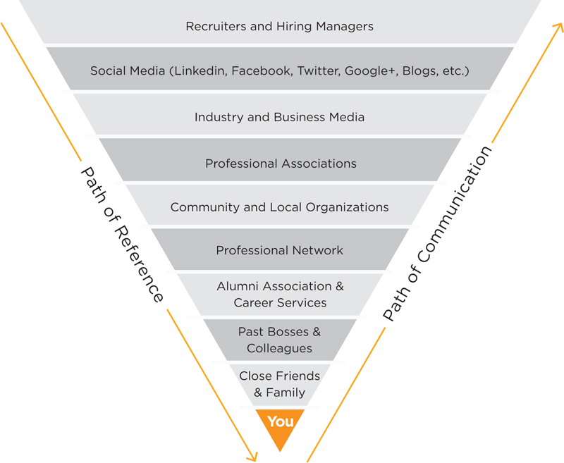